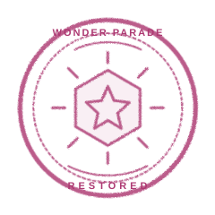

WONDER PARADE HALL
가이드
관제실
Ⅱ
PARADE LINEUP
행진 대열을 복구하세요
캐릭터 네 명을 원래 위치로 돌려보내세요.
이동 조작
캐릭터를 바꿀 칸으로 드래그하거나, 선택한 뒤 방향키를 누르세요.
위치 섞기
원래 위치 다시 보기
퍼레이드 리듬 맞추기
패턴 확인
←
↑
↓
→

퍼레이드 시작!
네 캐릭터가 무대에 올랐어요.
Passport 기록 확인
WONDER PARADE HALL
가이드
배치 예시
다시 연습
←
↑
↓
→
WONDER PARADE HALL
행진 대열을 복구하세요
01
02
03
04
게임 시작
게임으로 돌아가기
일시정지
계속하기
관제실로 돌아가기